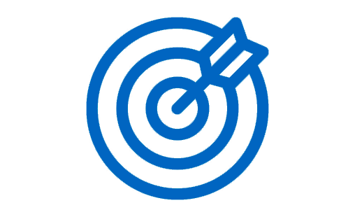
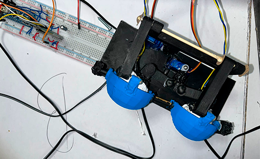

Sobre nosotros
LUKA BYTE,es una empresa comprometida con la expansión y el desarrollo del conocimiento en el área de sistemas. Nuestro objetivo es reflejar, a través de nuestro diseño y aplicación, la solidez y profundidad de nuestros conocimientos en todas las áreas tecnológicas que abarcamos.

Ser un conjunto de ngenieros en sistemas computacionales que aporten conocimientos aplicados al desarrollo de proyectos en diversas áreas de aplicacion aducativa y tecnología

Desarollar tecnologías que impulsen la puesta práctica de conocimentos, brindando productos y servicios confiables, eficientes y centrados en el usuario.
Se llevó a cabo el proceso de CAD y digitalización del boceto conceptual inicial, sentando las bases formales del diseño general.

Se procedió con la fabricación de las piezas componentes de Luka mediante impresión 3D, cada elemento producido conforme a los modelos digitales previamente diseñados.

Se desarrolló el circuito electrónico utilizando la plataforma Arduino, integrando programación para optimizar el funcionamiento del sistema y su respuesta ante distintos escenarios operativos.
Se incorporó un módulo de audio al sistema permitiendo que se pueda reproducir sonidos o respuestas generadas, haciendo que la interacción sea más expresiva y cercana a los usuarios.
Se desarrolla la estructura de la página web del proyecto y se gestiona su control de versiones mediante Git, permitiendo un seguimiento organizado de los avances y facilitando la colaboración y actualización del contenido.

Se implementa una base de datos para almacenar y gestionar la información del proyecto de forma estructurada, asegurando accesibilidad, integridad de los datos y facilitando su integración con la página web.
Se diseña e implementa una base de datos específica para registrar las piezas que componen a Luka, permitiendo un control detallado de cada componente, su función, características técnicas y estado, facilitando así el mantenimiento y futuras actualizaciones del sistema.
Se desarrolla una base de datos orientada a la gestión de los integrantes involucrados en las distintas actividades del proyecto, permitiendo organizar roles, tareas asignadas, tiempos de participación y seguimiento del proyecto.